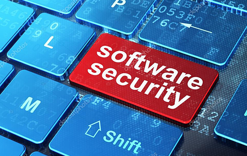

Seguridad de software
Está se utiliza para la protección de los software de ataques de programas maliciosos, hackers, con el objetivo de garantizar que el software siga funcionan ando de forma correcta, este es un aspecto básico en la seguridad informática pues se debe garantizar la protección de la información, la disponibilidad de los software, este tipo de seguridad está basada en la implementación de software (Firewall) que evita el ingreso de usuarios no autorizados o ataques remotos protegiendo de esta forma el interior de la infraestructura.